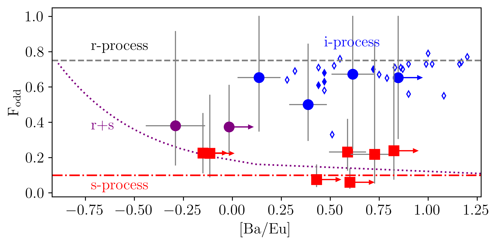

Research
My research focuses on the origin of the chemical elements,
with particular emphasis on neutron-capture nucleosynthesis,
very metal-poor stars, and Galactic archaeology.
The source of light neutron-capture elements in the early Galaxy: s-process in massive stars
I use high-resolution spectra of very metal-poor stars for determination of barium isotope ratios together with non-LTE abundances of Sr, Ba, and Eu.
These measurements provide the first observational evidence that an early s-process operating in massive stars contributed to the production of Sr in the early Galaxy, resolving a long-standing problem.
Unlocking the mystery of strontium synthesis in the early Galaxy through analysis of barium isotopes in very metal-poor stars
The Ba Isotopic Ratio as a Way of Distinguishing the R- and S-Process in Chemical Evolution Models
Tracing the origin of neutron-capture elements in carbon enhanced metal-poor (CEMP) stars
I use barium isotope ratios together with non-LTE abundances of Ba and Eu to distinguish contributions from
the s-, r-, and i-processes in CEMP stars. This provides the observational diagnostic capable of unambiguously separating
i-process enrichment from s-process enrichment.

Distinct barium isotope ratios in CEMP-s and CEMP-rs stars
Ba Isotope Ratio in CEMP-s and CEMP-rs Stars as a Signature of s-Process and i-Process
Galactic archaeology
I use high-resolution spectroscopy of stars in stellar
streams and dwarf galaxies to reconstruct their chemical
evolution and formation histories.
HR-GO: I. Comprehensive NLTE abundance analysis of the Cetus stream
The formation of the milky way halo and its dwarf satellites: a NLTE-1D abundance analysis. IV. Segue 1, Triangulum II, and Coma Berenices UFDs